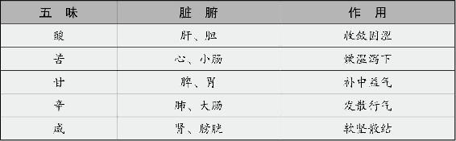

食物有酸、苦、甘、辛、咸五味。酸包括酸味和涩味，苦分为苦寒和苦温，甘包括淡味和甜味，辛是辛香、麻味和辣味，咸包括咸味和鲜味。
这些味道分别入五脏六腑，各有其药理作用。

五味入五脏，并非越多越补。用得好，补益的作用最强；用得不好，损害的作用也最强。这跟人与人之间的关系是一个道理：只有最亲近的人才可能让一个人感受到最大的伤害，因为彼此太熟悉了，一出手就能点中对方的死穴。
一年四季中，五脏各有其旺盛的季节，那是不是在这个季节就应该多吃跟它同一五行属性的味道才对身体好呢？
恰恰相反，一个季节什么脏腑最旺，就要少吃跟它同样属性的东西。
为什么？因为，五味入五脏，起到的是“泄”的作用。这里所说的“泄”，是与“补”相对而言的。“补”是补这个脏腑之所长，也就是加强它的特性；而“泄”是指补这个脏腑之所缺，也就是抑制它的特性，保持阴阳的平衡。
五味养生之道，第一是适度。再好的东西，都不能过量，否则就会打破人体阴阳的平衡。
第二是全面。我们都知道，生活的精彩就在于五味俱全。为什么泡在蜜罐里长大的年轻人会因为一点小事轻生，而历经战乱的老人却能乐观地活下来？只有品尝过痛苦的滋味，才能体会出幸福的甘甜。养生之道也是如此，只有调和五味，才能激发出生命的活力。食物的味道越丰富，就越能汲取各种五行属性的精华。中国人做菜，讲究五味俱全，将阴阳五行之道，运用到一粥一饭之中，这就是养生的最高境界。
要了解五味的五行属性，下面就先从五脏的五行以及四季如何饮食、保健这方面来谈吧。